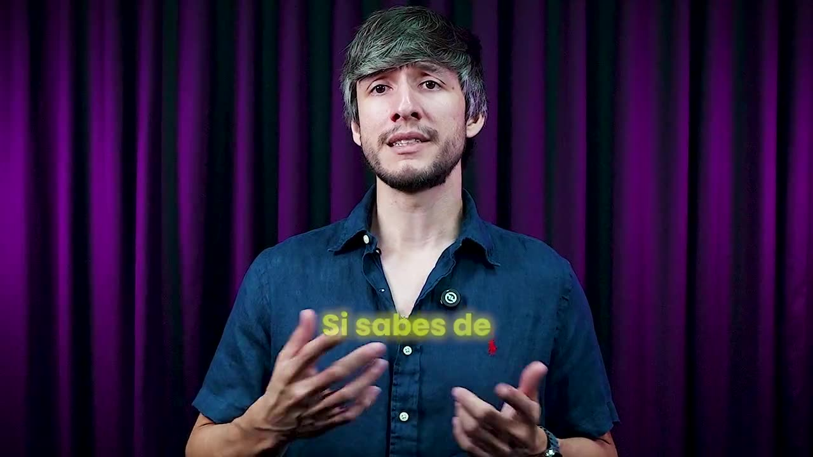

Trabajas muchísimas horas en lo mismo de siempre —reportes, cierres, conciliaciones— y nunca se acaba. Ya probaste ChatGPT y te salió genérico: lo que cualquier persona te hubiera dicho o hecho.
Y ni siquiera sabes si está bien o mal.
Reservar mi lugar en el webinarQuién lo enseña
Jorge Sierra (hijo)
Producto y tecnología12 años construyendo productos digitales sobre bases financieras reales.
Estudió Maestría en Algoritmos de Optimización y Machine Learning
